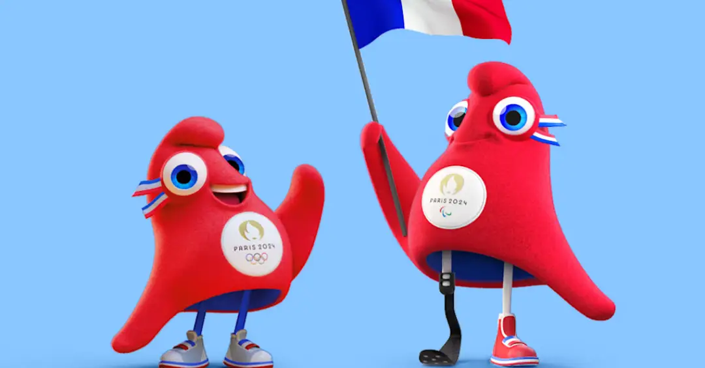

Já as Olimpíadas modernas surgiram graças à visão do pedagogo e esportista francês Barão Pierre de Coubertin. Inspirado pelas escavações arqueológicas em Olímpia entre 1875 e 1881 e pelo legado da civilização grega, Coubertin fundou o Comitê Olímpico Internacional (COI) em 1894, órgão que regulamenta os Jogos Olímpicos até hoje. A primeira edição dos Jogos Olímpicos modernos ocorreu em Atenas, em 1896, com a participação de 14 países e 241 atletas. As modalidades incluídas eram atletismo, ciclismo, esgrima, ginástica, halterofilismo, luta, natação e tênis.
Interessantemente, na primeira edição moderna, os vencedores recebiam medalhas de prata, enquanto os outros competidores eram premiados com medalhas de cobre e ramos de louro. A premiação com medalhas de ouro, prata e bronze como conhecemos hoje foi introduzida apenas em 1904. Desde então, os Jogos Olímpicos só deixaram de ser realizados em três ocasiões: em 1916, devido à Primeira Guerra Mundial, e em 1940 e 1944, por causa da Segunda Guerra Mundial.
Os mascotes das Olimpíadas têm uma longa tradição, servindo como símbolos que representam a cultura do país-sede e promovem a união entre os povos. Cada edição dos Jogos Olímpicos apresenta um mascote único, que geralmente reflete elementos locais. Esses personagens são projetados para engajar o público, especialmente as crianças, e para promover os valores olímpicos de amizade, respeito e excelência. Além de serem adorados pelo público, os mascotes também desempenham um papel importante nas campanhas de marketing e na promoção dos eventos.
O mascote dos Jogos Olímpicos de Paris 2024 é uma figura inovadora e cativante: o “Phryge”, um boné frígio que simboliza a liberdade e a Revolução Francesa. Com um design que remete à história e à cultura francesa, o Phryge é uma forma estilizada de um coração que também representa a diversidade e a inclusão. Ele foi escolhido para refletir o espírito acolhedor da cidade e seu desejo de celebrar não apenas os atletas, mas também a comunidade em torno dos Jogos.
